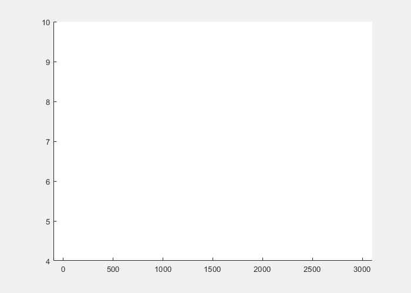

Research Collection

DVT: Dendritic Learning-incorporated Vision Transformer for Image Recognition
Zhiming Zhang,
Zhenyu Lei,
Masaaki Omura,
Hideyuki Hasegawa,
and Shangce Gao
•
IEEE/CAA Journal of Automatica Sinica
• Feb 2024
DVT combines dendritic learning and Vision Transformer architecture, showcasing superior image recognition performance through biologically inspired structures.

PCM: Pareto Dominance Archive and Coordinated Selection Strategy-Based Many-Objective Optimizer for Protein Structure Prediction
Zhiming Zhang,
Shangce Gao,
Zhenyu Lei,
Runqun Xiong,
and Jiujun Cheng
•
IEEE/ACM Transactions on Computational Biology and Bioinformatics
• May 2023
A evolutionary learning-based protein structure prediction, providing the dynamic folding process and giving some interpretable insights for biology.